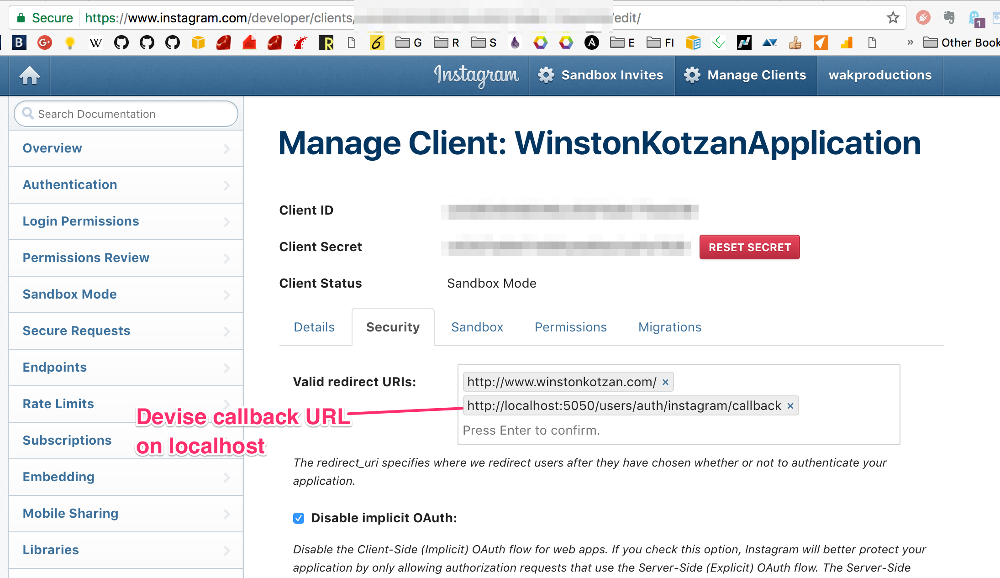
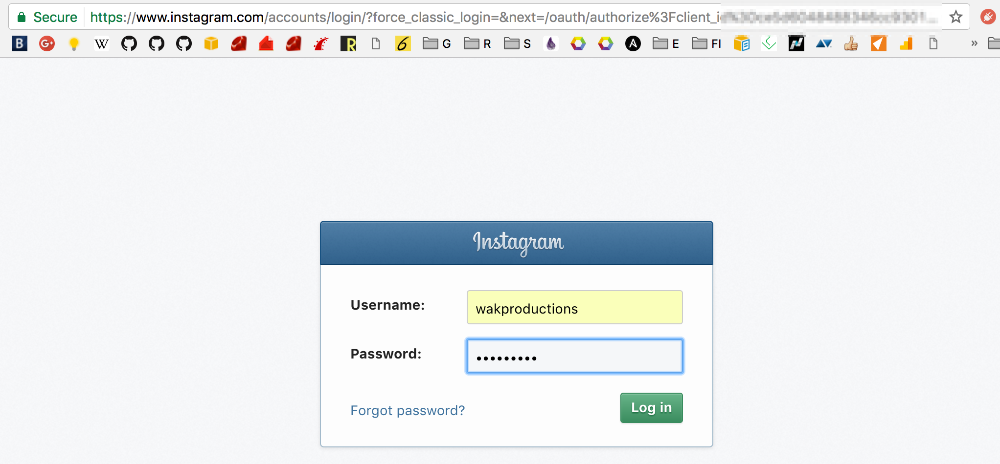

How to test Devise Omniauth in your local development environment with Instagram
06/18/2017
For testing in your local environment, you can set the Omniauth redirect to a URL on your localhost. First, you have to add localhost to your list of authorized hosts in your Omniauth settings:

Then access the Oauth link to log into Instagram. You can do this by clicking a link in your browser set by your Rails app running locally, or you can type the URL into your browser directly:
https://www.instagram.com/oauth/authorize?client_id=<-- your client id -->&redirect_uri=http://localhost:5050/users/auth/instagram/callback&response_type=code
You can then log into your Instagram account and it will redirect you back to the application.

Showing that the Devise callback URL is being hit by the browser with the access token from inside rails s:
2: def instagram
3: @user = User.from_omniauth(omniauth_data)
4:
5: binding.pry
6:
=> 7: if @user.access_token != omniauth_data.credentials.token
8: # This will be saved by the `sign_in_and_redirect` method below
9: @user.access_token = omniauth_data.credentials.token
10: end
[1] pry(#<Users::OmniauthCallbacksController>)> @user
=> #<User id: 1, uid: "300202775", email: "", created_at: "2017-06-18 19:25:50", updated_at: "2017-06-18 19:25:50", access_token: nil, first_name: "Winston", last_name: "Kotzan", middle_name: "", time_zone: nil, provider: "instagram">
[2] pry(#<Users::OmniauthCallbacksController>)> User.count
(1.2ms) SELECT COUNT(*) FROM "users"
=> 1
[4] pry(#<Users::OmniauthCallbacksController>)> request.env['omniauth.auth']
=> {"provider"=>"instagram",
"uid"=>"300202775",
"info"=>
{"nickname"=>"wakproductions",
"name"=>"Winston Kotzan",
"email"=>nil,
"image"=>"https://scontent.cdninstagram.com/t51.2885-19/11934657_1625722474367056_1293718021_a.jpg",
"bio"=>"",
"website"=>""},
"credentials"=>{"token"=>"300202775.ce5d604.417373f3e1e844478f2ddfae17dbe378", "expires"=>false},
"extra"=>
{"raw_info"=>
{"id"=>"300202775",
"username"=>"wakproductions",
"profile_picture"=>"https://scontent.cdninstagram.com/t51.2885-19/11934657_1625722474367056_1293718021_a.jpg",
"full_name"=>"Winston Kotzan",
"bio"=>"",
"website"=>""}}}
[5] pry(#<Users::OmniauthCallbacksController>)>